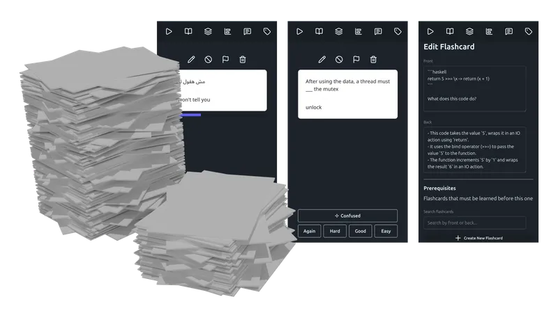
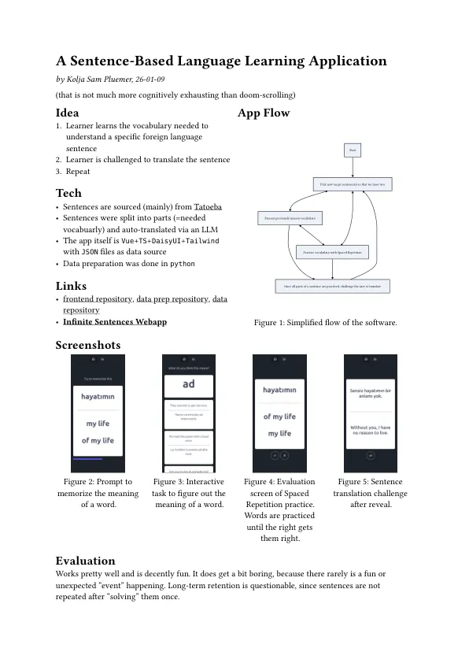
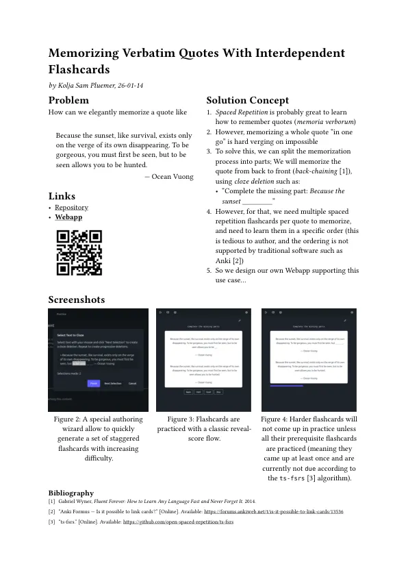
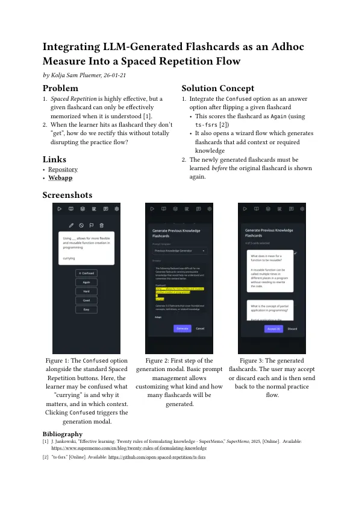
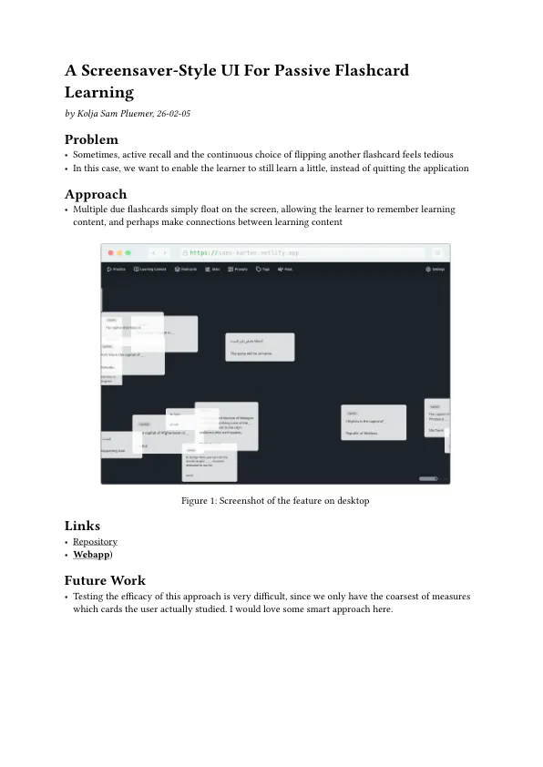

My mission is to make the world a better place by building excellent tools for learning.
Contact
Projects

infinite sentences
Data-driven sentence learning app where you practice exactly the vocabulary needed to understand a piece of natural language. Frontend Repo Dataset Online App
karten
Online Spaced Repetition learning tool with experimental features such as interdependent flashcards and list memorization repository MVP
learn the world map
A geography game where you learn where every country in the world is. Game Repository- I'm building an as-of-yet-unnamed app for learning the exact language skills that you need in a specific situation (instead of, say, random grammar).
- I have a zettelkasten-style digital garden: How to make the world a better place by building really good tools for learning?
Small, strange & old projects
- If you want to organize your Obsidian.md vault with zettelkasten IDs, check out my angry-luhmann plugin.
- If you are interested in being more mindful of your computer usage, you may be interested in why-turn-on-computer.
- If you are interested in managing habits, todos and checking-in-with-yourself questions in a hyper-minimal, retro-terminal-inspired app, go here.
- I am building obsidian-to-html, a static site generator based on Obsidan.md vaults. It powers the digital garden mentioned below.
- I made an infographic explaining how to instantiate/duplicate/spawn a scene in Godot: PDF, PNG
.webp)
Al Kutshina
A visual language learning game where you can practice without translating, inspired by the Total Physical Response method repository play online
Basic Egyptian Arabic Sentences
A time pressure sentence learning language game for essential Egyptian Arabic experimentation results and flow repository play online.webp)
Currency Conversion Practice
Small Vue app to practice mentally converting from one currency to another repository web app.webp)
Cut Up And Practice
A python desktop application to practice sheet music with extreme chunking. repositoryfailed

Know Every Year
An online Spaced Repetition Software to memorize historic events using the Major System. required complexity of nested forms overwhelmed my architecture and UI paradigmarchived
.webp)
inspirationbot
A website recommending random reference pictures for art practice. website legacy repository new repositoryarchived
failed
.webp)
memorization.cafe
Online Spaced Repetition app supporting advanced data types for memorizing not only flashcards but also lists, verbatim quotes and concepts via elaborative interrogation bespoke data types lead to an explosion of complexity in UI, UX and data flow webapp
random-stretch
A website recommending you a stretching exercise you can do right now. Website RepositoryExperiments
I log smaller, self-contained findings and experiments in a single-page PDF format:





